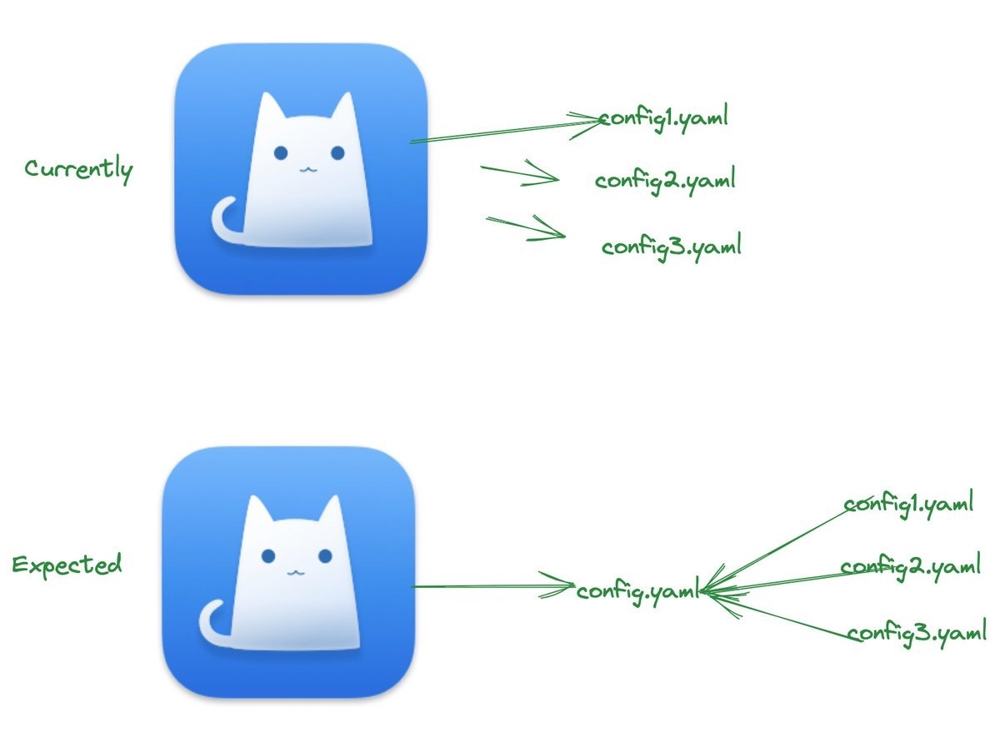
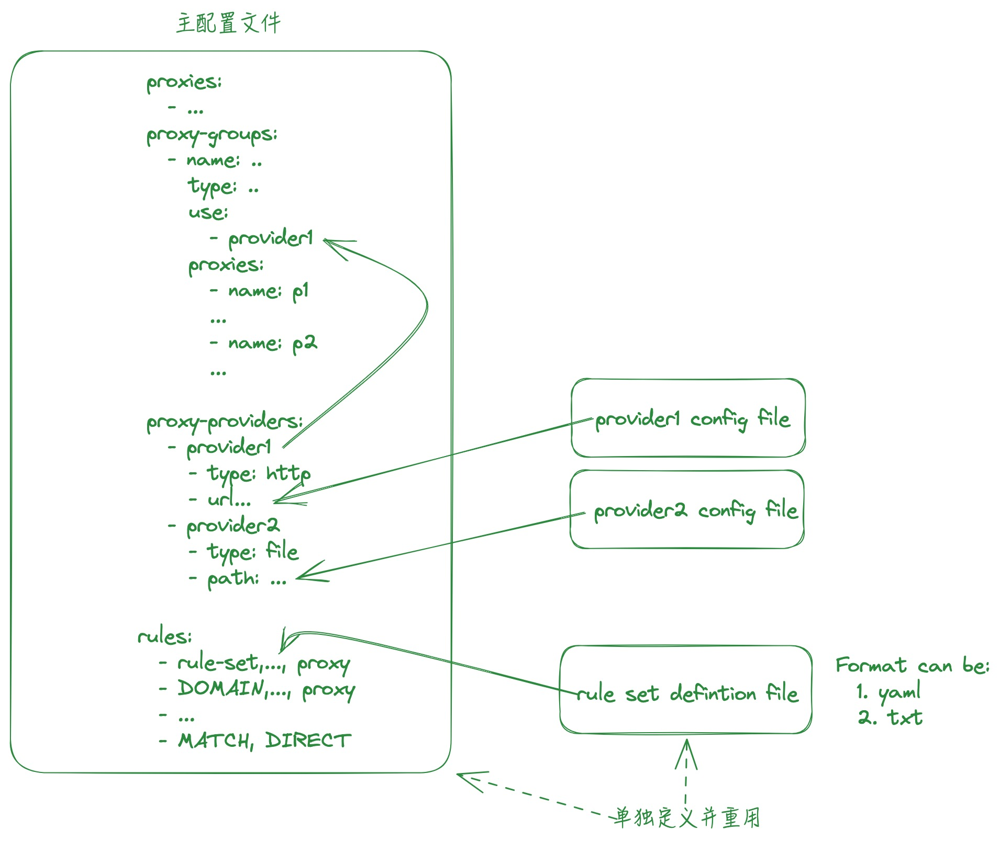

如何聚合重用Clash的配置？
王福强
2023-08-30
How to reuse Clash‘s rules or proxy configurations?!
因为有多个通道，有自己搭建的，也有外购的，所以，经常会在其中切换，但一个比较头疼的问题就是：
- 要在所有这些通道之间同步配置内容，尤其是规则，还挺烦躁的；
- 远端接入的服务，有些时候，本地的客户端不提供prepend或者append规则配置的途径，所以，一旦远端定时更新，那么，本地添加的内容会被冲掉；
所以，希望有一种方式可以保留本地自己添加的配置，但同时又能利用原来通道提供的能力，类似于这样：

原来要在各个通道的配置之前切换来切换去，并尽量同步常用的配置内容，尤其是规则，现在，我希望能只用一个主的配置文件，然后接入其它通道的能力甚至规则，这样，我就只要变更自己的主配置文件或者独立的规则配置文件就可以了，渠道主体能力部分原来是啥样还是啥样，不做变更，只做聚合。
受X友提醒，加上之前大体上也了解过Clash类客户端的配置结构，最终敲定可行方案：

基本上就是分两大部分职能进行聚合：
- 通过proxy-groups来聚合自己的通道以及第三方提供的通道，自建的因为不多，所以，直接以proxy的形式配置到主配置文件就可以了，第三方的 通道则通过proxy-provider的形式接入；
- 通过ruleset添加多个同类规则的策略，这些规则集将是后面定制与添加规则的主要地方；
基于这个配置框架，就可以只用一个主配置文件就可以了，加上本地git的版本控制以及ln -s {config in repo} {destination dir}，基本上可以做到local first的私密性与安全性，又不是配置的灵活性，完美～
「为AI疯狂」星球上，扶墙老师正在和朋友们讨论有趣的AI话题，你要不要⼀起来呀？^-^
这里
- 不但有及时新鲜的AI资讯和深度探讨
- 还分享AI工具、产品方法和商业机会
- 更有体系化精品付费内容等着你，加入星球(https://t.zsxq.com/0dI3ZA0sL) 即可免费领取。(加入之后一定记得看置顶消息呀！)

存量的时代，省钱就是赚钱。
在增量的时代，省钱其实是亏钱。
避坑儿是省钱的一种形式，更是真正聪明人的选择！
弯路虽然也是路，但还是能少走就少走，背后都是高昂的试错成本。